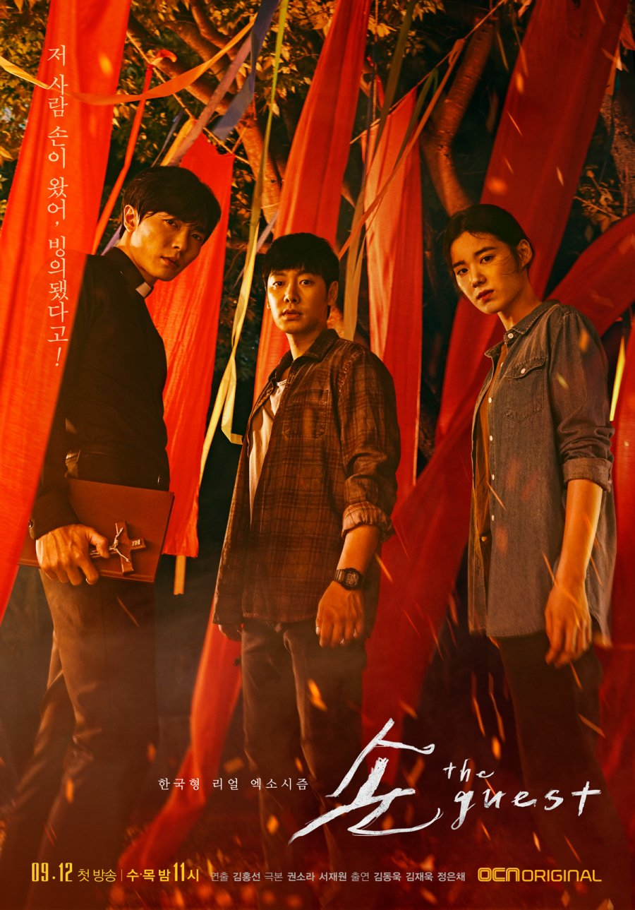
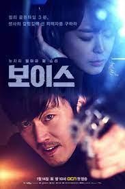

|  | Hand: The Guest
Starring Kim Dong-wook as Yoon Hwa-pyung, Kim Jae-uck as Choi Yoon, Jung Eun-chae as Kang Gil-young. "The Guest" is a South Korean drama following psychic Yoon Hwa Pyung, Catholic priest Choi Yoon, and detective Kang Gil Young as they confront the malevolent spirit Park Il Do and battle supernatural forces in a town plagued by gruesome murders. |
|  | Voice 1
Starring Jang Hyuk as Moo Jin-hyuk, Lee Ha-na as Kang Kwon-joo, Kim Jae-uck as Mo Tae-gu "Voice 1," Mo Tae Gu emerges as the chilling antagonist, responsible for the murders of Kang Kwon Joo's father and Min Hyuk's wife. As a cunning serial killer, Tae Gu's reign of terror sets the stage for a gripping battle of justice and vengeance. With Kang Kwon Joo's skill as a voice profiler and Min Hyuk's relentless pursuit, they must confront Tae Gu's sinister presence, unraveling the dark secrets behind his crimes. |
 |
Her Private Life
Starring Park Min-young as Sung Deok-mi, Kim Jae-uck as Ryan Gold "Her Private Life" is a South Korean romantic comedy series that follows the life of Sung Deok-mi, a dedicated art curator who leads a double life as a devoted fan girl of a K-pop idol. To maintain her professional image, Deok-mi keeps her fangirling activities a secret. However, her carefully curated life is thrown into chaos when her new boss, Ryan Gold, discovers her fangirl identity. As they navigate their growing attraction, Deok-mi and Ryan find themselves entangled in misunderstandings and comedic situations. Along the way, the series explores themes of identity, passion, and the complexities of modern relationships, offering a heartwarming and humorous look at love and fandom culture. |